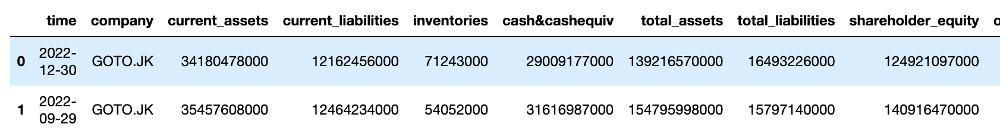
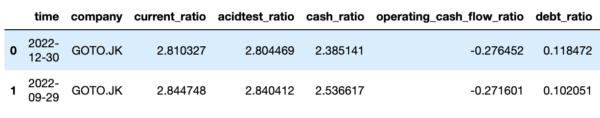

Guide to Use ScraFSY
Before the Scrape
Install ChromeDriver
This module require chrome driver for web-crawling. Make sure you have alreadu installed chromedriver and note the location of your ChromeDriver in your PC.
Install Required Library
This module require some library such as BeautifulSoup4, Selenium, time, Pandas, and Numpy.
1. BeautifulSoup4 is used for parse HTML from Yahoo Finance. This parse process is needed to collect the important information from the HTML file.
2. Selenium is used for web crawling. This is needed because some data need document object model from javascript to be generated. And it active when there are interaction with pages.
3. time is used for delaying in process block code. This is needed because the pages has to be fully loaded before HTML collection process.
4. Pandas is used to make dataframe
5. Numpy is used for manipulate data type.
Import Module
from ScraFSY import YFinanceScrapper
Scrape Journey
1. Instances a Scrape Session Object
You must instance a Scrape Session Object in each scrape session.
For example:
bca = YFinanceScrapper('BBCA.JK)
bmri = YFinanceScrapper('BMRI.JK)
aali = YFinanceScrapper('AALI.JK)
There are 3 session of scrape.
Notes: Before you start to collect data, make sure you already defined your path location of your ChromeDriver in attribute path.
For example:
bca = YFinanceScrapper('BBCA.JK)
bca.path = '/usr/local/bin/chromedriver'
2. Get OneState Dataframe
There are two option in way to getting OneState Dataframe.
You can get all 3 separated financial statement dataframe in one function using get_alldata() or get one statement dataframe using get_finance_data(statement).
For example:
bca.get_finance_data('Income Statement')
bca.income_statement
You will get income statement dataframe in attribute income_statement.
or
bca.get_alldata()
bca.income_statement
bca.cash_flow
bca.balance_sheet
You will get income statement dataframe in attribute income_statement, balance sheet dataframe in balance_sheet, and cash flow dataframe in cash_flow
3. Get KeyFeat Dataframe
After you get OneState Dataframe, you can generated KeyFeat Dataframe in using method important_dataframe().
For example:
goto=YFinanceScrapper('GOTO.JK)
goto.get_alldata()
goto.important_dataframe()
It will give you dataframe like this:

Note: It is not work in Bank financial statements because different format of financial statements.
{kind=link}
4. Get Metric Dataframe
If your KeyFeat Dataframe has been already built, you can make Metric Dataframe by using method metric_dataframe().
For example:
goto=YFinanceScrapper('GOTO.JK)
goto.get_alldata()
goto.important_dataframe()
goto.metric_dataframe()
It will give you dataframe like this:

{kind=link}
5. Convert Dataframe to CSV Files
You can convert dataframe to csv files by using method convert_to_csv(table)
For example:
goto=YFinanceScrapper('GOTO.JK)
goto.get_finance_data('Income Statement')
goto.convert_to_csv(self.income_statement)
Please see the References for further details.
About the Dataframe
OneState Dataframe
One state dataframe is dataframe that represent each statement in financial statement (Income Statement, Balance Sheet, and Cash Flow Statement). The feature of this dataframe is vary depend on company financial statement format in Yahoo Finance. You can get this dataframe in all company that is provided by Yahoo FInance
KeyFeat Dataframe
KeyFeat dataframe is dataframe that contain feature combination in each statement. The following are list of features in this dataframe:
- 1. Company
- 2. Time
- 3. Current Assets
- 4. Current Liabilities
- 5. Inventories
- 6. Cash and Cash Equivalent
- 7. Total Assets
- 8. Total Liabilitites
- 9. Shareholder Equity
- 10. Operating Cashflow
- 11. Investing Cashflow
- 12. Financing Cashflow
- 13. End Cash
- 14. Gross Profit
- 15. Operating Income
- 16. Total Revenue
- 17. Net Income
- 18. Interest Expense
- 19. Cost of Good Sold
- 20. EBIT
- 21. EPS
- 22. EBITDA
Metric Dataframe
Metric dataframe is dataframe that contain selected financial metrics that are calculated from KeyFeat Dataframe. The following are list of features in this dataframe:
- 1. Company
- 2. Time
- 3. Current Ratio
- 4. Acid Test Ratio
- 5. Cash Ratio
- 6. Operating Cashflow Ratio
- 7. Debt Ratio
- 8. Return on Asset Ratio
- 9. Debt to Equity Ratio
- 10. Interest Coverage Ratio
- 11. Return on Equity Ratio
- 12. Gross Margin Ratio
- 13. Operating Margin Ratio